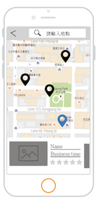
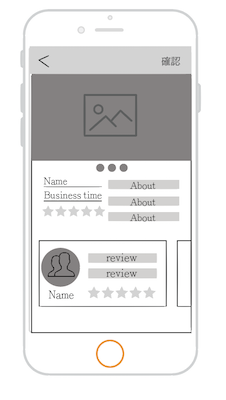
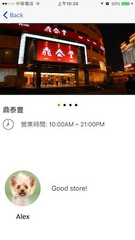
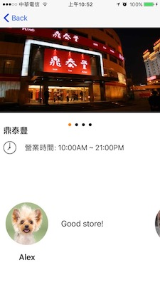
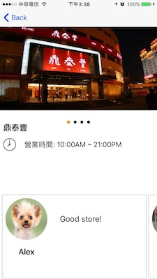

這週開始動工，因為地圖的部分較為複雜，所以先從它開始弄畫面
與後端串API的部分是先用postman發request，後端能正確新增訂單即可，剩下的細節等流程串起來再調整
一開始product designer給二張wireframe


第一張比較麻煩的是下半部的商店簡介，這裡應該要能左右滑動且地圖中心點要移到商店座標
我使用一個隱藏的collection view，上面排好元件
使用者點選商家時，由商家名稱找出商家陣列中符合的index，再reload collection view的資料
1 | // MapViewDelegate |
使用者點選商家會觸發didSelectAnnotationView事件，找到商家後更新collection view
而collection view需要捲到相對應的cell，這裡需要willDisplayCell這個delegate的方法把剛才得到的index使用scrollToItemAtIndexPath捲動cell
點選collection view cell後可以進到該商家的頁面，這裡花了比較多時間刻出designer想要的畫面
原本第一版上半部商家圖片和下半部使用者評論都是使用collection view，但考量需要加入page controll後，上半部改用scroll view來做

但給其它同學測試，發現下半部的畫面會讓使用者不知道可以滑動
所以我把cell的寬度縮減一些

發現效果還是平平，改加一個框框後

CollectionViewCell程式碼1
2
3
4
5
6
7
8
9
10
11
12
13
14
15
16
17
18
19
20class StoreCommentsCollectionViewCell: UICollectionViewCell {
override func layoutSubviews() {
self.userImageView.clipsToBounds = true
self.userImageView.layer.cornerRadius = userImageView.frame.size.width / 2
}
required init?(coder aDecoder: NSCoder) {
super.init(coder: aDecoder)
}
override init(frame: CGRect) {
super.init(frame: frame)
}
override func drawRect(rect: CGRect) {
self.layer.borderWidth = 0.5
self.layer.borderColor = UIColor.blackColor().CGColor
}
}
這效果讓designer點頭，於是第一版的畫面就先定下來。
這中間討論的過程還算順利，也很慶幸自己沒有偷懶，看到wireframe先不要急著打搶，想辦法找答案做出來才是該有的態度。